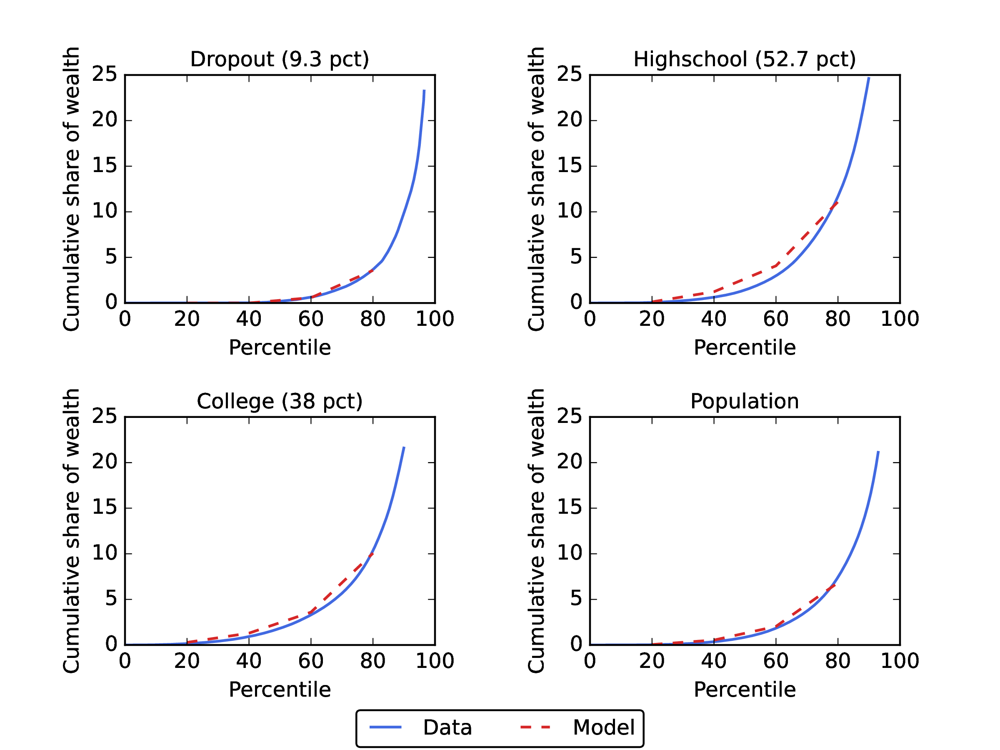
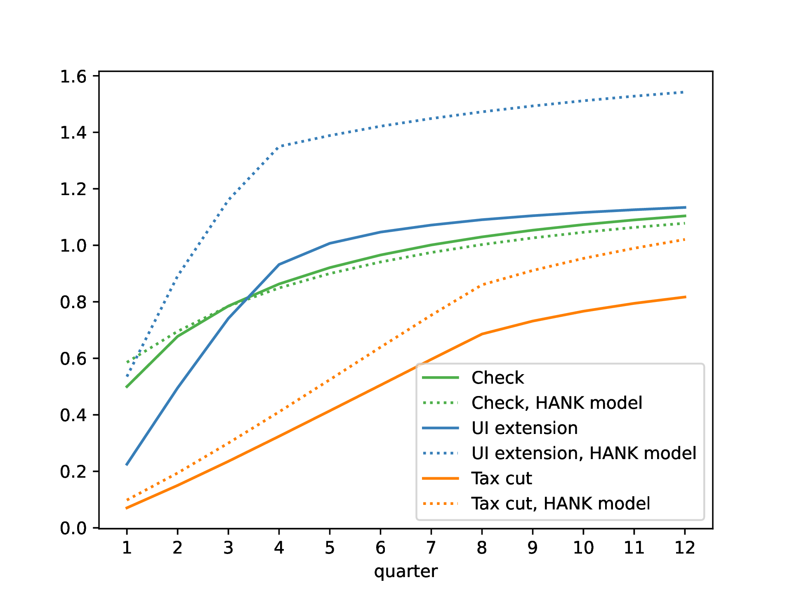

_____________________________________________________________________________________
Abstract
Using a heterogeneous agent model calibrated to match spending dynamics over four years
following an income shock (Fagereng, Holm, and Natvik (2021)), we assess the effectiveness of three
fiscal stimulus policies implemented during recent recessions. Unemployment insurance (UI)
extensions are the “bang for the buck” winner when the metric is effectiveness in boosting utility.
Stimulus checks are second-best and have two advantages (over UI): they arrive faster, and are
scalable. A temporary (two-year) cut in wage taxation is considerably less effective than the
other policies and has negligible effects in the version of our model without a multiplier.
| GitHub Repo: | https://github.com/econ-ark/HAFiscal |
| html: | https://econ-ark.github.io/HAFiscal/ |
| PDF: | HAFiscal.pdf |
| BibTeX: | ccdft-HAFiscal.bib |
| Slides: | https://econ-ark.github.io/HAFiscal/HAFiscal-Slides.pdf |
| Replication Package: | 10.5281/zenodo.19120432 |
| Other Materials: |
| Jupyter Notebook: | https://econ-ark.org/materials?hafiscal |
| HANK Dashboard: | https://hafiscal.econ-ark.org |
1 Carroll: Department of Economics, Johns Hopkins University, ccarroll@jhu.edu, and NBER .
2Crawley: Monetary Affairs, Federal Reserve Board, edmund.s.crawley@frb.gov
3Du: Intellectual Property Practice, Secretariat, wdu@secretariat-intl.com
4Frankovic: Directorate General Economics, Deutsche Bundesbank, ivan.frankovic@bundesbank.de
5Tretvoll: Research Department, Statistics Norway and HOFIMAR, BI Norwegian Business School,
hakon.tretvoll@ssb.no
The views expressed in this paper are those of the authors and do not necessarily represent those of the Federal Reserve Board, the Deutsche Bundesbank and the Eurosystem, or Statistics Norway. The paper has received funding from the European Research Council (ERC) under the European Union’s Horizon 2020 research and innovation programme (Grant agreement 851891) and from the Research Council of Norway (Grant 326419). The replication package is available at https://zenodo.org/records/19120432. Updated code and supplemental material is available at https://github.com/econ-ark/HAFiscal.
We thank seminar participants at the Federal Reserve Board, Deutsche Bundesbank, the European Central Bank, the Norwegian University of Science and Technology, Oslo Macro Group, the Society for Computational Economics in 2023 and 2024, Statistics Norway, the University of Pennsylvania, Vanderbilt University, Johns Hopkins University, and West Virginia University for valuable feedback. We also want to thank Sasha Indarte, Adrian Monninger, Plutarchos Sakellaris, and three anonymous referees for insightful comments on the paper. Thanks also to the Econ-Ark team members who helped with the project, particularly Alan Lujan, Akshay Shanker, and Matthew White.
© 2026 The Authors. The published version of record, Quantitative Economics 17(3), 741–790, is licensed under the Creative Commons Attribution-NonCommercial License 4.0 (CC BY-NC 4.0). The authors retain copyright, and this paper is freely distributable under the terms of the Apache License 2.0.
Fiscal policies that aim to boost consumer spending in recessions have been tried in many countries in recent decades. The nature of such policies has varied widely, perhaps because traditional macroeconomic models have not provided plausible guidance about which ones are likely to be most effective—either in reducing misery (a “welfare metric”) or in increasing output (a “GDP metric”).
But a new generation of macro models has shown that when microeconomic heterogeneity across consumer circumstances (wealth, income, education) is taken into account, the consequences of an income shock for consumer spending depend on a measurable object: the intertemporal marginal propensity to consume (iMPC) introduced in Auclert, Rognlie, and Straub (2024). The iMPC extends the notion of a marginal propensity to consume to account for the speed at which households spend. Fortuitously, new sources of microeconomic data, particularly from Scandinavian national registries, have recently allowed the first high-quality measurements of the iMPC (Fagereng, Holm, and Natvik (2021)).
Even in models that can match a given measured iMPC pattern, the relative merits of alternative policies depend profoundly both on the metric (welfare or GDP) and on the quantitative structure of the rest of the model, for example, whether multipliers exist and whether the degree of multiplication is different under different economic conditions. Here, after constructing a microeconomically credible heterogeneous agent (HA) model, we examine that model’s implications for how effects of stimulus policies depend on the existence and timing of any “multipliers,” which, following Krueger, Mitman, and Perri (2016), we model in a clean and simple way, so that the interaction of the multiplier (if any) with the other elements of the model is reasonably easy to understand. This partial equilibrium analysis allows us to transparently incorporate the possibility that multipliers may be larger in recessions. But we understand that a richer general equilibrium framework could introduce transmission channels absent from the partial-equilibrium-plus-multiplier analysis, so we also analyze a standard HANK-and-SAM general equilibrium model modified to embed our households’ consumption responses.1
By “microeconomically credible,” we mean, at a minimum, a model that can match both the cross-sectional distribution of liquid wealth (following Kaplan and Violante (2014)’s definition of liquid wealth) and the entire pattern of the iMPC from Fagereng, Holm, and Natvik (2021) (see Figure 1a for their data and our model’s fit to it).
Standard HA models can match both the pattern of spending in years 1–4 (for a shock that arrives in year 0) and the initial distribution of liquid wealth.2 But even a brief look at the figure convinces the eye that spending in the initial period when the shock arrives seems out of line with the smooth declining pattern in years 1–4. The eye is not wrong: HA models that match liquid assets and the spending pattern in years 1–4 seriously underpredict the amount of immediate spending that occurs on receipt of the income shock.
We call this initial extra spending the “excess initial MPC.” Below, we describe a substantial and longstanding literature in which the pattern of an excess initial MPC has been documented, and a vigorous recent literature confirming the fact with different datasets and various theoretical explanations.
If multipliers are operative only in recessions (or are more powerful in recessions), a model that fails to capture the excess initial MPC might generate the wrong answers for the effectiveness of the alternative fiscal policies.
The purpose of our paper is not to weigh in on which of the alternative models of an excess initial MPC is right. Instead we sought the simplest modeling device that would capture the empirical fact of an excess initial MPC and permit unambiguous welfare calculations. We accomplish this by adding to the standard model something we call “splurge” behavior, in which each household has a portion of income out of which they have a high MPC, and the remainder of their income is disposed of as in standard micro models with mildly impatient but time-consistent consumers. Because the available evidence finds high initial MPCs even among wealthy households, we assume that this splurge behavior is the same across households and independent of their liquid wealth holdings.3
Our resulting structural model could be used to evaluate a wide variety of consumption stimulus policies. We examine three that have been implemented in recent recessions in the United States (and elsewhere): an extension of unemployment insurance (UI) benefits, a means-tested stimulus check, and a payroll tax cut.
Our first metric of policy effectiveness is “spending bang for the buck”: For a dollar of spending on a particular policy, how much multiplication is induced? First, we calculate the policy-induced spending dynamics in an economy with no multiplier. We then follow Krueger, Mitman, and Perri (2016)’s approach to modeling the aggregate demand externality, in which output depends mechanically on the level of consumption relative to steady state. But in our model, the aggregate demand externality is only switched on when the economy is experiencing a recession—there is no multiplication for spending that occurs after our simulated recession is over.
Even without multiplication, a utility-based metric can justify countercyclical policy on welfare grounds because the larger idiosyncratic shocks to income that occur during a recession may justify a greater-than-normal degree of social insurance. Because our model’s outcomes reflect the behavior of utility-maximizing consumers, we can calculate a measure of the effectiveness of alternative policies: their effect on consumers’ welfare. We call this “welfare bang for the buck.”
The principal difference between the two metrics is that what matters for the degree of spending multiplication is how much of the policy-induced extra spending occurs during the recession (when the multiplier matters), while effectiveness in the utility metric also depends on who is doing the extra spending (because the recession hits some households much harder than others).
Because high-MPC consumers tend to have high marginal utility, a standard aggregated welfare function would favor redistribution to such consumers even in the absence of a recession. We are interested in the degree of extra motivation for social insurance that is present in a recession, so we construct our social welfare metric specifically to measure only the incremental social welfare effect of alternative policies during recessions (beyond whatever redistributional logic might apply during expansions; see Section 4.3).
When the multiplier is active, any reduction in aggregate consumption below its steady-state level directly reduces aggregate productivity, and thus labor income. Hence, any policy stimulating consumption will also boost incomes through this aggregate demand multiplier channel.
Our results are intuitive. In the economy with no recession multiplier, the benefit of a sustained payroll tax cut is negligible.4 When a multiplier exists, the tax cut has more benefits, especially if the recession continues long enough that most of the spending induced by the tax cut happens while the economy is still in recession (and the multiplier still is in force). The typical recession, however, ends long before our “sustained” wage tax cut is reversed—and even longer before lower-MPC consumers have spent down most of their extra after-tax income. Accordingly, even in an economy with a multiplier that is powerful during recessions, much of the wage tax cut’s effect on consumption occurs when any multiplier that might have existed in a recession is no longer operative.
Even leaving aside any multiplier effects, the stimulus checks improve welfare more than the wage tax cut, because at least a portion of such checks goes to unemployed people who have both high MPCs and high marginal utilities (while wage tax cuts, by definition, go only to persons who are employed and earning wages). The greatest “welfare bang for the buck” comes from the UI extension, because many of the recipients are in circumstances in which they have a much higher marginal utility than they would have had in the absence of the recession, whether or not the aggregate demand externality exists.
And, in contrast to the wage-tax cut, both the UI extension and the stimulus checks concentrate most of the marginal increment to consumption at times when the multiplier (if it exists) is still powerful. A disadvantage of the UI extension relative to the stimulus checks, in terms of “spending bang for the buck,” is that it takes somewhat more time until the transfers reach the beneficiaries. The stimulus checks are assumed to be distributed immediately in the same quarter as the recession starts. Countering this disadvantage is the fact that the MPC of UI recipients is higher than that of stimulus check recipients and, furthermore, the insurance nature of the UI payments reduces the precautionary saving motive. In the end, our model says that these two forces roughly balance each other, so that the spending bang for the buck of the two policies is similar. In the welfare metric, however, there is considerable marginal value to UI recipients even if they receive some of the benefits after the recession is over (and no multiplier exists). Hence, in the welfare metric, the relative value of UI benefits is increased compared with the policy of sending stimulus checks.
We conclude that extended UI benefits should be the first weapon employed from this arsenal, as they have a greater welfare benefit than stimulus checks and a similar (multiplied) spending effect. But a disadvantage is that the total amount of stimulus that can be accomplished with the UI extension is constrained by the fact that only a limited number of people become unemployed. If more stimulation is called for than can be accomplished via the UI extension, checks have the advantage that their effects scale almost linearly in the size of the stimulus; see Beraja and Zorzi (2024) for a more detailed exposition of the relation between MPC and stimulus size. The wage tax cut is also, in principle, scalable, but its effects are smaller because recipients have lower MPCs and marginal utility than check and UI recipients. In the real world, a tax cut is also likely the least flexible of the three tools: UI benefits can be further extended, and multiple rounds of checks can be sent, but multiple rounds of changes in payroll tax rates would likely be administratively and politically more difficult.
One theme of our paper is that which policies are better or worse, and by how much, depends on both the quantitative details of the policies and the quantitative modeling of the economy.
But the tools we are using could be reasonably easily modified to evaluate a number of other policies. For example, in the COVID-19 recession in the U.S., not only was the duration of UI benefits extended, but those benefits were also supplemented by substantial extra payments to every UI recipient. We did not calibrate the model to match this particular policy, but the framework could accommodate such an analysis.
Our paper is part of the growing literature using structural heterogeneous agent models to examine effects of countercyclical fiscal policies.
Because the quantitative implications of HA models depend profoundly on getting certain microeconomic details right, we begin with a brief synopsis of what we view as the relevant takeaways from the micro literature.
For our purposes, the single most important kind of micro evidence is on the iMPC; we explicitly target our partial equilibrium model to match the microeconomic iMPC estimates of Fagereng, Holm, and Natvik (2021), whose evidence is the gold standard because their millions of datapoints allow precise estimates over a long horizon (5 years) and because their natural experiment is almost ideal (a lottery win is a random shock by construction). Particularly striking is their evidence on the excess initial MPC. Any worry that their Norwegian evidence might not apply in other countries is allayed by results in a new paper by Kotsogiannis and Sakellaris (2024), who use data from a Greek lottery and find that the induced extra monthly spending in the first 3 months after the win is triple the induced extra spending in the remaining observed months.
There are, of course, many prominent papers dating all the way back to Friedman (1963) finding that the initial spending response to shocks is vastly greater than implied by a representative agent model (in particular a steady stream of state-of-the-art papers by Jonathan Parker and his collaborators). In much of that literature, there has been some evidence that the initial spending response was out of line with the subsequent effects (see, e.g., Parker, Souleles, Johnson, and McClelland (2013); Broda and Parker (2014); Johnson, Parker, and Souleles (2006)), but data limitations usually made it difficult to sharply pin down the temporal pattern of spending (especially beyond the 6-month horizon).
Another striking result in Fagereng, Holm, and Natvik (2021) was that even households with high liquid wealth exhibited high MPC’s. Boehm, Fize, and Jaravel (2025), Graham and McDowall (2026), Crawley and Kuchler (2023), and Kueng (2018) among others also provide strong evidence of high MPCs for high-liquid-wealth households.5
A rapidly growing recent literature has used a variety of data sources to reconfirm the high initial MPC, but with an eye to providing theoretical explanations. We sketch this literature because different theories might have different implications for the spending consequences of a shock.
One possibility is that the burst of initial spending is rationalizable if the spending is on durables (Browning and Crossley, 2009). Mankiw (1982) showed that in the frictionless case, spending on durable goods should be vastly more responsive to an income shock than spending on nondurables. It seems plausible that a model with a large number of goods that are durable at, say, the quarterly or annual frequency could explain the “excess initial MPC” as reflecting a rational marginal propensity to eXpend (MPX).6
Maxted, Laibson, and Moll (2025) combine a simplified model of durables spending with the assumption common in behavioral economics that spending decisions are influenced by “present bias” (people have time-inconsistent preferences). They present a back-of-the-envelope calculation that yields a rough estimate that the ratio of initial spending on durables to the spending that would occur if all spending were nondurable is roughly three to one (not far from the ratio estimated in the Greek lottery episode studied by Kotsogiannis and Sakellaris (2024)).
Indarte, Kluender, Malmendier, and Stepner (2024) use high frequency bank account data to study spending responses to the U.S. 2021 stimulus, and find substantial “excess MPC’s” especially among low income households; like Maxted, Laibson, and Moll (2025) they lean toward present bias as an explanation.7
The logic of Akerlof and Yellen (1985) and Cochrane (1989) suggests that the utility consequences of “near-rational” deviations from frictionless rational behavior are small. In that spirit, Boutros (2026) and Ilut and Valchev (2022) present models with bounded rationality and costly reoptimization. Building on this logic, Andre, Flynn, Nikolakoudis, and Sastry (2026) argue that costs of reoptimization cause consumers to resort to simple “quick-fix” consumption heuristics; for small shocks, most people in their survey report that they anticipate that their MPC’s would be one or zero.
The “splurge” component of our consumption model is a simple modeling device that lets the model match the empirical evidence, regardless of what the right deep explanation(s) may be. As we will show, the model with our splurge component is consistent with all of what we described above as the key “takeaways” from the micro literature.
Turning now to the macroeconomic setting, a number of papers have addressed questions that are similar in spirit to ours. For example, McKay and Reis (2016), McKay and Reis (2021), and Phan (2024) have examined the role of automatic stabilizers in HA models.
We follow much of the recent literature in treating recessions as “MIT shocks”—unanticipated events. And the policies we examine are discretionary, which arguably makes sense as reflecting what occurs when the automatic stabilizers have not automatically prevented a recession.8
A relevant early contribution is by Kaplan and Violante (2014) who build a model where agents save in both liquid and illiquid assets. Their model yields a substantial consumption response to a stimulus payment, since MPCs are high both for low-wealth households and for the many households (in their model) with high net worth but little liquid assets (the “wealthy hand-to-mouth”). (Though the subsequent literature finding high MPCs even by wealthy households with ample liquidity casts doubt on this mechanism.)
Bayer, Born, Luetticke, and Müller (2023) study discretionary fiscal policies implemented after a large shock, in their case the COVID-19 pandemic. They find that targeted stimulus through an increase in unemployment benefits has a much larger effect than an untargeted policy. In contrast, we find that untargeted stimulus checks have slightly larger spending effects than a targeted policy extending eligibility for unemployment insurance. The difference derives from the fact that—in our model as in the data—even middle- and high-liquid-wealth consumers have relatively high MPCs, which means that much more of the stimulus checks get spent quickly.
Carroll, Crawley, Slacalek, and White (2021) also study the U.S. fiscal response to the COVID-19 pandemic, using a HA model similar in many respects to the one we study. They predicted9 the consumption response to the 2020 U.S. CARES Act that contained both an extension of unemployment benefits and a stimulus check. They resolve the tension between obtaining a realistic MPC and fitting the distribution of liquid wealth by estimating the distribution of ex ante heterogeneity in discount factors that allows the model to match both kinds of data (discount heterogeneity is one of several competing mechanisms for resolving that tension discussed by Kaplan and Violante (2022)). But the model in that paper does not match the subsequently published evidence about the iMPC (Fagereng, Holm, and Natvik (2021)); does not incorporate a multiplier; and does not compare the relative effectiveness of alternative stimulus policies.
Another related paper is Broer, Druedahl, Harmenberg, and Öberg (2025), who analyze the output response to different fiscal policies in a HANK and SAM model similar to the one we present in our robustness exercise. As we do in Section 5, they examine the policies in a steady state rather than a recession. Unlike us, they do not calibrate their model to match the wealth distribution and the iMPCs, and they do not evaluate the policies using a welfare metric as we do in our baseline partial equilibrium setting.
One criterion to rank policies is the extent to which induced spending is “multiplied,” and our paper therefore relates to the vast literature discussing the size and timing of any multiplier. Our focus is on policies pursued in the Great Recession, a period when monetary policy was essentially fixed at the zero lower bound (ZLB). We therefore do not consider monetary policy responses to the policies we evaluate in our primary analysis, and our work thus relates to papers such as Christiano, Eichenbaum, and Rebelo (2011) and Eggertsson (2011), who argue that fiscal multipliers are higher in such circumstances. Hagedorn, Manovskii, and Mitman (2019) present an HA model with both incomplete markets and nominal rigidities to evaluate the size of the fiscal multiplier and also find that it is higher when monetary policy is constrained. They focus on government spending instead of transfers and are interested in the consequences of alternative options for financing that spending. Broer, Krusell, and Öberg (2023) also focus on fiscal multipliers for government spending and show how they differ in representative agent and HA models with different sources of nominal rigidities. Finally, Ramey and Zubairy (2018) find empirical evidence that multipliers are higher when there is slack in the economy or the ZLB binds. In any case, our concern in the versions of our model with multipliers is to compare the relative size of any differences in multiplication across the policies we consider, which should thus be roughly scalable by the absolute size of any multiplication effect, allowing a reader to scale our results by their preferred estimate of the magnitude of recessionary multipliers.
Aside from the size of spending effects (whether multiplied or not), we are interested in ranking policies in terms of their welfare consequences. Thus, the paper relates to the recent literature on welfare comparisons in HA models. Both Bhandari, Evans, Golosov, and Sargent (2026) and Dávila and Schaab (2025) introduce ways of decomposing welfare effects. In the former case, these are aggregate efficiency, redistribution, and insurance, while the latter further decomposes the insurance part into intra and intertemporal components.
One part of these decompositions is tricky: Under standard calibrations like the ones we use, any change in redistribution tends to have powerful consequences on welfare. We presume that there are real (but unmodeled) reasons that the equilibrium degree of redistribution in normal (nonrecessionary) times is much less than the model would call for. We therefore develop a welfare measure that abstracts from any incentive for a planner to increase redistribution in the steady state (or “normal” times).
The paper is organized as follows. Section 2 presents our baseline partial equilibrium model of households’ consumption and saving problem as well as how we model a recession and the potential response in terms of three different consumption stimulus policies. Section 3 describes the steps we take to parameterize the model and discusses the implications for some moments that we do not target. In Section 4, we compare the three policies implemented in a recession both in terms of their multipliers and in terms of a welfare measure that we introduce. Section 5 presents a general equilibrium HANK and SAM model where we compare the multipliers of the same three policies to the partial equilibrium results. Section 6 concludes. Finally, the Appendix provides more details of the HANK and SAM model discussed in Section 5, while a Supplemental Appendix shows results from a version of the model without splurge consumption.
Consumers differ by their level of education and, within education group, by subjective discount factors (calibrated to match the within-group distribution of liquid wealth). We first describe each kind of consumer’s problem, given an income process with permanent and transitory shocks calibrated to their type, as well as type-specific shocks to employment. The next step describes the arrival of a recession and the policies we study as potential fiscal policy responses. The last section discusses an extension incorporating aggregate demand effects that induce feedback from aggregate consumption to income and (via the marginal propensity to consume) back to consumption, amplifying the effect of a recession when it occurs.
A consumer has education and a subjective discount factor . The consumer faces a stochastic income stream, , and chooses to consume a fraction of that income when it arrives—the “splurge,” described in the Introduction.10 With what is left over, the consumer chooses to optimize consumption without regard to the fraction that was already spent.11 Therefore, consumption each period for consumer can be written as in (1):
|
| (1) |
where is total consumption, is the splurge consumption, and is the consumer’s optimal choice of consumption after splurging. Splurge consumption is simply a fraction of income, as shown in (2):
|
| (2) |
while the optimized portion of consumption is chosen to maximize the perpetual-youth lifetime expected-utility-maximizing consumption, where is the death probability:
|
| (3) |
We use a standard CRRA (constant relative risk aversion) utility function, so for and for , where is the coefficient of relative risk aversion. The optimization is subject to the budget constraint (4), given existing market resources and income state, and a no-borrowing constraint:
|
| (4) |
where is the gross interest factor for accumulated assets , and is determined by (6).
Consumers face a stochastic income process with permanent and transitory shocks to income, along with unemployment shocks. In normal times, consumers who become unemployed receive unemployment benefits for two quarters. Permanent income evolves according to (5):
|
| (5) |
where is the shock to permanent income and is the average growth rate of income for the consumer’s education group .12 The realized growth rate of permanent income for consumer is thus . The shock to permanent income is normally distributed with variance .
The actual income a consumer receives, given the permanent income from (5), will be subject to the individual’s employment status as well as transitory shocks, , as shown in (6):
|
| (6) |
where is normally distributed with variance , and and are the replacement rates for an unemployed consumer who is or is not eligible for unemployment benefits, respectively.
A Markov transition matrix generates the unemployment dynamics where the number of states is given by plus the number of periods that unemployment benefits last. An employed consumer can continue being employed or move to being unemployed with benefits.13 The first row of is thus given by , where indicates the probability of becoming unemployed from an employed state and is a vector of zeros of the appropriate length. Note that we allow this probability to depend on the education group of consumer and will calibrate this parameter to match the average unemployment rate for each education group. Upon becoming unemployed, all consumers face a probability of transitioning back into employment and a probability of remaining unemployed with one less period of remaining benefits. After transitioning into the unemployment state where the consumer is no longer eligible for benefits, the consumer will remain in this state until becoming employed again. The probability of becoming employed is thus the same for each of the unemployment states and education groups.
We model the arrival of a recession, and the government policy response to it, as an unpredictable event—an MIT shock. We have four types of shocks: one representing a recession and one for each of the three different policy responses we consider. The policy responses are usually modeled as in addition to the recession, but we also consider a counterfactual in which the policy response occurs without a recession in order to understand the welfare effects of the policy.
Recession. At the onset of a recession, several changes occur. First, the unemployment rate for each education group doubles: Those who would have been unemployed in the absence of a recession are still unemployed, and an additional number of consumers move from employment to unemployment. Second, conditional on the recession continuing, the employment transition matrix is adjusted so that unemployment remains at the new high level and the expected length of time for an unemployment spell increases. In our baseline calibration, discussed in detail in Section 3.3.1, we set the expected length of an unemployment spell to one and a half quarters in normal times, and this length increases to four quarters in a recession. Third, the end of the recession occurs as a Bernoulli process calibrated for an average length of recession of six quarters. Finally, at the end of a recession, the employment transition matrix switches back to its original probabilities, and as a result, the unemployment rate trends down over time, back to its steady-state level. The details of how certain model parameters change in a recession are presented in Section 3.3.2.
Policies. The policies we consider in response to a recession are inspired by the Economic Stimulus Act of 2008 and the Tax Relief, Unemployment Insurance Reauthorization, and Job Creation Act of 2010. The former included means-tested stimulus checks in the form of tax rebates, and the latter included both an extension of unemployment benefits and a tax cut. Based on these examples, we therefore consider the following stimulus policies in our framework:
1. Stimulus check. In this policy response, the government sends money to every consumer that directly increases the household’s market resources. The checks are means-tested depending on permanent income. A check for $1,200 is sent to every household with permanent income less than $100,000, and this amount is then linearly reduced to zero for households with a permanent income greater than $150,000. Similar policies were implemented in the U.S. in 2001, 2008, and during the pandemic.
2. Extended unemployment benefits. In this policy response, unemployment benefits are extended from two quarters to four quarters. That is, those who become unemployed at the start of the recession, or who were already unemployed, will receive unemployment benefits for up to four quarters (including quarters leading up to the recession). Those who become unemployed one quarter into the recession will receive up to three quarters of unemployment benefits. These extended unemployment benefits will occur regardless of whether the recession ends, and no further extensions are granted if the recession continues. This policy reflects temporary changes made to unemployment benefits in the U.S. following the Great Recession.
3. Payroll tax cut. In this policy response, employee-side payroll taxes are reduced for a period of eight quarters.14 During this period, which continues irrespective of whether the recession continues or ends, employed consumers’ income is increased by 2%. The income of the unemployed is unchanged by this policy. Households also believe there is a 50–50 chance that the tax cut will be extended by another 2 years if the recession has not ended when the first tax cut expires.15 The payroll tax cut introduced in the U.S. in 2010 was itself an extension of previously implemented cuts and had a 2-year horizon.
Financing the policies. Some work in the HA macro literature has shown that if taxes are raised immediately to offset any fiscal stimulus, results can be very different than they would be if, as occurs in reality, recessionary policies are debt financed. However, typical fiscal rules assume that any increase in debt gets financed over a long interval. Accordingly, almost all of the effects of any particular fiscal rule will be similar for each of our policies so long as the great majority of the debt is repaid after the short recessionary period that is our main focus.
To keep our analysis as simple as possible, we do not model the debt repayment. Any of a variety of fiscal rules could be imposed for the period following our short period of interest, but we did not want to choose any particular fiscal rule in order to avoid making a choice that has little consequence for our key question. Advocates of alternative fiscal rules likely already have intuitions about how such rules’ economic consequences differ, but those consequences—under our partial equilibrium analysis—will be similar for all three policies we consider. Alternative choices of fiscal rules will therefore not affect the ranking of policies that is our principal concern.16
Our baseline model is a partial equilibrium model that does not include any feedback from aggregate consumption to income. In an extension to the model, we add aggregate demand effects during the recession. The motivation for this specification comes from the idea that spending in an economy with substantial slack and in which the central bank is unable to prevent a recession will result in higher utilization rates and greater output. By contrast, government spending in an economy running at potential with an active monetary policy will not succeed in increasing output. The recent inflation experience of the U.S. provides some evidence that output responds highly nonlinearly to aggregate demand. This idea is explored in a recent revival of research into nonlinear Phillips curves, such as Benigno and Eggertsson (2023) and Blanco, Boar, Jones, and Midrigan (2024).
With this extension, any changes in consumption away from the steady-state consumption level feed back into labor income. Aggregate demand effects are evaluated as in (7):
|
| (7) |
where is the level of consumption in the steady state. Idiosyncratic income in the aggregate demand extension is multiplied by the aggregate demand function from (7), as shown in (8):
|
| (8) |
The series from (8) is then used for each consumer’s budget constraint (4).
This section describes how we set the model’s parameters. First, we estimate the extent to which consumers “splurge” when receiving an income shock. Given the lack of empirical evidence on the marginal propensity to consume over time for the US, we instead use Norwegian data to estimate the splurge. Specifically, we calibrate our model to the Norwegian economy and match evidence from Norway on the profile of the marginal propensity to spend over time and across different wealth levels, as provided by Fagereng, Holm, and Natvik (2021).17
Second, we set up the full model on U.S. data, taking the splurge factor as given from the Norwegian estimation. In the full model, agents differ according to their level of education and their subjective discount factors. A subset of the parameters in the model are calibrated equally for all types, and some parameters are calibrated to be specific to each education group. Finally, a distribution of subjective discount factors is estimated separately for each education group to match features of each within-group liquid wealth distribution.
The splurge allows us to capture the shorter- and longer-term response of consumption to income shocks, especially for consumers with significant liquid wealth. The main aim of this paper, however, is to rank consumption stimulus policies, not to provide a microfoundation for the splurging behavior. We view the splurge factor as a model device that enables us to rank the policies in a model that is consistent with the best available micro-evidence of spending patterns over time after a transitory income shock. In Appendix B we provide results from our model without a splurge factor. There we show that such a model provides a worse fit to the moments in the data that we are interested in, but not dramatically so, and that our conclusions regarding the ranking of the policies are not affected. However, in our view, this version of the model requires households with unreasonably low discount factors.
The specific exercise we carry out in this section is to show that our model can account well for the results of Fagereng, Holm, and Natvik (2021), who study the effect of lottery winnings in Norway on consumption using millions of records from the Norwegian population registry. We calibrate our model to reflect the Norwegian economy and, using their results, estimate the splurge factor, as well as the distribution of discount factors in the population, to match two empirical moments.
First, we take from Fagereng, Holm, and Natvik (2021) the marginal propensity to consume out of a one-period income shock. We target not only the initial (aggregate) response of consumption to the income shock, but also the subsequent effect on consumption in years 1 through 4 after the shock. We also target the initial consumption response in the cross-section, that is, across the quartiles of the liquid wealth distribution, for which empirical estimates are also provided. The shares of lottery winnings expended at different time horizons, as found in Fagereng, Holm, and Natvik (2021), are plotted in Figure 1a. Table 1 (second row) shows the initial consumption response across liquid wealth quartiles.
Second, we match the steady-state distribution of liquid wealth in the model to its empirical counterpart. Because of the lack of data on the liquid wealth distribution in Norway, we use the corresponding data from the United States, assuming that liquid wealth inequality is comparable across these countries.18 Specifically, we impose as targets the cumulative liquid wealth shares for the entire population at the 20th, 40th, 60th, and 80th income percentiles, which, in data from the Survey of Consumer Finances (SCF) in 2004 (Board of Governors of the Federal Reserve System, 2004) (see Section 3.2 for further details), equal , , , and , respectively. Hence, of the total liquid wealth is held by the top income quintile. We also target the mean liquid wealth to income ratio of 6.60. The data are plotted in Figure 1b.
Note: This figure demonstrates the calibration of the splurge factor (Section 3.1). Panel (a) shows the model’s fit to the dynamic consumption response following lottery wins in Norway, as estimated by Fagereng, Holm, and Natvik (2021) using millions of population registry records. The splurge factor of allows the model to match both the high initial MPC and the gradual spending over subsequent years. Panel (b) shows the model’s fit to the U.S. liquid wealth distribution from the 2004 SCF, with 92.6% of liquid wealth held by the top income quintile. See Section 3.2 for the liquid wealth definition following Kaplan and Violante (2014).
For this estimation exercise, the remaining model parameters are calibrated to reflect the Norwegian economy. Specifically, we set the real interest rate to annually and the unemployment rate to , in line with Aursland, Frankovic, Kanik, and Saxegaard (2020). The quarterly probability to survive is calibrated to , reflecting an expected working life of 40 years. Aggregate productivity growth is set to annually, following Kravik and Mimir (2019). The unemployment net replacement rate is calibrated to , following OECD (2020). Finally, we set the real interest rate on liquid debt to , following data from the Norwegian debt registry Gjeldsregistret (2022).19
Estimates of the standard deviations of the permanent and transitory shocks are taken from Crawley, Holm, and Tretvoll (2025), who estimate an income process on administrative data for Norwegian males from 1971 to 2014. The estimated annual variances for the permanent and transitory shocks are 0.004 and 0.033, respectively.20 As in Carroll, Crawley, Slacalek, Tokuoka, and White (2020), these are converted to quarterly values by multiplying the permanent and transitory shock variances by and , respectively. Thus, we obtain quarterly standard deviations of and .
Using the calibrated model, we simulate unexpected lottery winnings and calculate the share of the lottery spent in each year. Specifically, each simulated agent receives a lottery win in a random quarter of the first year of the simulation. The size of the lottery win is itself random and spans the range of lottery sizes found in Fagereng, Holm, and Natvik (2021). The estimation procedure minimizes the distance between the target and model moments by selecting the splurge factor and the distribution of discount factors in the population, where the latter are assumed to be uniformly distributed in the range . We approximate the uniform distribution of discount factors with a discrete approximation and let the population consist of seven different types.
The estimation yields a splurge factor of and a distribution of discount factors described by and . Given these estimated parameters and the remaining calibrated ones, the model is able to replicate the time path of consumption in response to a lottery win from Fagereng, Holm, and Natvik (2021) and the targeted distribution of liquid wealth well; see Figure 1. Also, the targeted moments discussed in Table 1 are captured well. In particular, the model is able to account for the empirical fact, in the first column, that the MPC for high-wealth agents is far above the near-zero value predicted by a model without a splurge.
Before we move on to the parameterization of the full model, we describe in detail the data that we use to get measures of permanent income, liquid wealth, and the division of households into educational groups in the United States. We use data on the distribution of liquid wealth from the 2004 wave of the SCF (Board of Governors of the Federal Reserve System, 2004). We restrict our attention to households where the head is of working age, which we define to be in the range from 25 to 62. The SCF-variable “normal annual income” is our measure of the household’s permanent income, and, to exclude outliers, we drop the observations that make up the bottom 5% of the distribution of this variable. The smallest value of permanent income for households in our sample is thus $16,708.
Liquid wealth is defined as in Kaplan and Violante (2014) and consists of cash, money market, checking, savings, and call accounts; directly held mutual funds; and stocks and bonds. We subtract off liquid debt, which is the revolving debt on credit card balances. Note that the SCF does not contain information on cash holdings, so these are imputed with the procedure described in Appendix B.1 of Kaplan and Violante (2014), which also describes the credit card balances that are considered part of liquid debt. We drop any households that have negative liquid wealth.
Households are classified into three educational groups. The first group, “Dropout,” applies to households where the head of household has not obtained a high school diploma; the second group, “Highschool,” includes heads of households who have a high school diploma and those who, in addition, have some years of college education without obtaining a bachelor’s degree; and the third group, “College,” consists of heads of households who have obtained a bachelor’s degree or higher. With this classification of the education groups, the Dropout group makes up of the population, the Highschool group , and the College group .
With our sample selection criteria, we are left with a sample representing about 61.3 million U.S. households.
With households classified into the three education groups using the SCF data, we proceed to set the parameters of the model as follows. First, we calibrate a set of parameters that apply to all types of households in the model. Second, we calibrate another set of parameters that are specific to each education group to capture broad differences across these groups. Finally, given the calibrated parameters we estimate discount factor distributions for each education group that allow us to match the distribution of liquid wealth in each group.
The model is a simplified model for households in that we do not take into account heterogeneity across household size or composition. The households are ex ante heterogeneous in their subjective discount factors as well as their level of education. We classify the education level of the household based on the education of the head of the household, and we typically think of individual characteristics as applying to that person.
A period in the model is one quarter. This choice makes it realistic to consider stimulus policies that are implemented in the same period as a recession starts.
Table 2 presents our calibration of the model parameters in normal times. Panel A lists parameters that are calibrated equally across all types in the model, and panel B lists parameters in the model that are education specific. In the next subsection, we present how certain model parameters change when the economy enters a recession.
Preferences, survival and interest rates. All households are assumed to have a coefficient of relative risk aversion equal to . We also assume that all households have the same propensity to splurge out of transitory income gains and set , the value estimated in Section 3.1.21 However, each education group is divided into types that differ in their subjective discount factors. The distributions of discount factors for each education group are estimated to fit the distribution of liquid wealth within that group, and this estimation is described in detail in Section 3.3.3. Regardless of type, households face a constant survival probability each quarter. This probability is set to , reflecting an expected working life of 40 years. The real interest rate on households’ savings is set to per quarter.
| Panel A: Parameters that apply to all types
| ||
| Parameter | Notation | Value |
| Risk aversion | 2.0 | |
| Splurge | 0.25 | |
| Survival probability, quarterly | 0.994 | |
| Risk free interest rate, quarterly (gross) | 1.01 | |
| Standard deviation of transitory shock | 0.346 | |
| Standard deviation of permanent shock | 0.0548 | |
| Unemp. benefits replacement rate (share of PI) | 0.7 | |
| Unemp. income w/o benefits (share of PI) | 0.5 | |
| Avg. dur. of unemp. benefits in normal times (quarters) | 2 | |
| Avg. dur. of unemp. spell in normal times (quarters) | 1.5 | |
| Prob. of leaving unemp. | 0.667 | |
| Consumption elasticity of aggregate demand effect | 0.3 | |
| Shows parameters calibrated the same for all types.
| ||
| .
| ||
| Dropout | Highschool | College | |
| Percent of population | 9.3 | 52.7 | 38.0 |
| Avg. quarterly PI of “newborn” agent ($1000) | 6.2 | 11.1 | 14.5 |
| Std. dev. of PI of “newborn” agent | 0.32 | 0.42 | 0.53 |
| Avg. quarterly gross growth factor for PI () | 1.0036 | 1.0045 | 1.0049 |
| Unemp. rate in normal times (percent) | 8.5 | 4.4 | 2.7 |
| Prob. of entering unemp. (, percent) | 6.2 | 3.1 | 1.8 |
Labor market risk while employed. When consumers are born, they receive an initial level of permanent income. This initial value is drawn from a log-normal distribution that depends on the education level the household is born with. For each education group, the parameters of the distribution are determined by the mean and standard deviation of log-permanent income for households in that group where the head of the household is of age 25 in the SCF 2004. For the Dropout group, the mean initial value of quarterly permanent income is $6,200; for the Highschool group, it is $11,100; and for the College group, it is $14,500. The standard deviations of the log-normal distributions for each group are, respectively, , , and .
While households remain employed, their income is subject to both permanent and transitory idiosyncratic shocks. These shocks are distributed equally for the three education groups. The standard deviations of these shocks are taken from Carroll, Crawley, Slacalek, Tokuoka, and White (2020), who set the standard deviations of the transitory and permanent shocks to and , respectively.
Permanent income also grows, on average, with a growth factor that depends on the level of education. These average growth rates are based on numbers from Carroll, Crawley, Slacalek, and White (2021), who construct age-dependent expected permanent income growth factors using numbers from Cagetti (2003) and fit the age-dependent numbers to their life-cycle model. We construct the quarterly growth rates of permanent income in our perpetual-youth model by taking the average of the age-dependent growth rates during a household’s working life. The average gross quarterly growth rates that we obtain for the three education groups are then , , and .
Unemployment. Consumers also face the risk of becoming unemployed and will then have access to unemployment benefits for a certain period. The parameters describing the unemployment benefits in normal times are based on the work of Rothstein and Valletta (2017), who study the effects on household income of unemployment and of running out of eligibility for benefits. The unemployment benefits replacement rate is thus set to for all households, and when benefits run out, the unemployment replacement rate without any benefits is set to . These replacement rates are set as a share of the households’ permanent income and are based on the initial drop in income upon entering an unemployment spell, presented in figure 3 in Rothstein and Valletta (2017).22
The duration of unemployment benefits in normal times is set to two quarters, so that our Markov transition matrix has four states. This length of time corresponds to the mean duration of unemployment benefits across U.S. states from 2004 to mid-2008 of 26 weeks, reported by Rothstein and Valletta (2017).
The probability of transitioning out of unemployment is set to match the average duration of an unemployment spell in normal times. In data from the Bureau of Labor Statistics, this average duration was 19.6 weeks or 1.5 quarters in 2004. We do not have data on education-specific duration rates, however, so we set the average duration of unemployment to 1.5 quarters for all households. This implies that the transition probability from unemployment to employment is set to .
The Bureau of Labor Statistics provides data on unemployment rates for different education groups, and we match the average rate in each group in 2004 by setting an education-specific probability of transitioning from employment into unemployment. Note that this calibration strategy is consistent with the results in Mincer (1991) who finds that the main difference between education groups is in the incidence of unemployment, and not its duration.23 More recent work by Elsby, Hobijn, and Şahin (2010) includes data up to 2009 and echoes Mincer’s results.
The average unemployment rate in 2004 was 8.5% for the Dropout group, 4.4% for the Highschool group, and 2.7% for the College group. These values imply that the probabilities of transitioning into unemployment in normal times are , , and , respectively.24
Finally, the strength of the aggregate demand effect in recessions is determined by the consumption elasticity of productivity. We follow Krueger, Mitman, and Perri (2016) and set this to .
Table 3 shows the model parameters that change when a recession hits. Panel A shows the change in two parameters that apply to all types, and panel B shows changes in some parameters that differ across education groups. For completeness, panel C summarizes the remaining parameters describing how we model a recession and the three policies we consider as potential responses to a recession.
The two immediate changes that occur at the outset of a recession are that the unemployment rate doubles for all education groups, and the expected duration of an unemployment spell increases from to quarters. The duration of unemployment is the same across the three education groups, and this implies that the probability of leaving unemployment is set to in a recession.
The increase in the expected duration of unemployment combined with the doubling of the education-specific unemployment rates pin down new values for the probabilities of transitioning from employment to unemployment during the recession. Due to the large increase in the unemployment duration, the values that we obtain end up being slightly smaller than those transition probabilities in normal times. The probability in a recession is set to for the Dropout group, for the Highschool group, and for the College group.
Our calibration of the transition probabilities between employment and unemployment during a recession is thus broadly in line with the results of Elsby, Hobijn, and Şahin (2010). They find that unemployment duration does not vary much between education groups and that the flow from unemployment to employment drops sharply for all groups in a recession. The flow into unemployment is more stable, but they find that it tends to increase a little bit in recessions.25 This differs from the small decrease in the transition probabilities from employment into unemployment that our calibration strategy implies, which follows from our choice of targeting a doubling of the unemployment rate for each group rather than an even larger increase.
| Panel A: Parameters that apply to all types
| ||
| Parameter | Notation | Value |
| Avg. duration of unemp. spell in a recession (quarters) | 4 | |
| Prob. of leaving unemployment in a recession | 0.25 | |
| .
| ||
| Dropout | Highschool | College | |
| Unemp. rate at the start of a recession (percent) | 17.0 | 8.8 | 5.4 |
| Prob. of entering unemployment (, percent) | 5.1 | 2.4 | 1.4 |
| Panel C: Parameters describing policy experiments
| |
| Parameter | Value |
| Average length of recession | 6 quarters |
| Size of stimulus check | $1,200 |
| PI threshold for reducing check size | $100,000 |
| PI threshold for not receiving check | $150,000 |
| Extended unemployment benefits | 4 quarters |
| Length of payroll tax cut | 8 quarters |
| Income increase from payroll tax cut | 2% |
| Belief (probability) that tax cut is extended | 50% |
Discount factor distributions are estimated separately for each education group to match the distribution of liquid wealth for households in that group. To do so, we let each education group consist of types that differ in their subjective discount factor, . The discount factors within each group are assumed to be uniformly distributed in the range . The parameters and are chosen for each group separately to match the median liquid-wealth-to-permanent-income ratio and the 20th, 40th, 60th, and 80th percentile points of the Lorenz curve for liquid wealth for that group. We approximate the uniform distribution of discount factors with a discrete approximation and let each education group consist of seven different types.
Panel A of Table 4 shows the estimated values of for each education group. The panel also shows the minimum and maximum values of the discount factors we actually use in the model when we use a discrete approximation with seven values to approximate the uniform distribution of discount factors. Panel B of Table 4 shows that with these estimated distributions, we can closely match the median liquid-wealth-to-permanent-income ratios for each education group. Figure 2 shows that with the estimated distributions, the model quite closely matches the distribution of liquid wealth within each education group as well as for the population as a whole. Thus, our model does not suffer from the “missing middle” problem, identified in Kaplan and Violante (2022), in which the middle of the wealth distribution has too little wealth.26
| Dropout | Highschool | College | |
| (0.656, 0.391) | (0.897, 0.111) | (0.979, 0.023) | |
| (Min, max) in approximation | (0.320, 0.991) | (0.802, 0.992) | (0.959, 0.999) |
| Dropout | Highschool | College | |
| Median LW/ quarterly PI (data, percent) | 4.64 | 30.2 | 112.8 |
| Median LW/ quarterly PI (model, percent) | 4.30 | 29.21 | 114.99 |

Note: This figure validates the discount factor estimation methodology (Section 3.3.3). Separate discount factor distributions are estimated for each education group to match the median liquid-wealth-to-permanent-income ratio and the 20th, 40th, 60th, and 80th percentile points of the Lorenz curve for liquid wealth. The model successfully avoids the “missing middle” problem identified by Kaplan and Violante (2022), where insufficient wealth accumulation occurs in the middle of the distribution. The “Population” panel demonstrates that pooling the three calibrated education groups produces a realistic aggregate liquid wealth distribution.
Note that several of the types in the Dropout group are estimated to have quite low discount factors (they are very impatient). In this way, the model fits the feature of the data for the Dropout group that the bottom quintiles accumulate hardly any liquid wealth. Such low estimates for discount factors are in line with those obtained in the literature on payday lending.27
Before we move on to compare different consumption stimulus policies in the calibrated model, we also report implications of the model for some nontargeted moments. Panel A of Table 5 shows the wealth distribution across the three education groups in the data and in the model. The model matches these shares quite closely, which may not be surprising given that we calibrate the size of each group and we manage to fit the wealth distribution within each group separately. The panel also reports the average marginal propensity to consume for the different groups. To be comparable to numbers reported in Fagereng, Holm, and Natvik (2021), these are calculated as the average MPC in the year of a lottery win. Lottery wins occur in a random quarter of the year that differs across individuals. The MPC for an individual depends on the spending pattern after the win, and these are averaged across individuals within each education group.
Panel B of Table 5 shows similar numbers to Panel A, sorted by quartiles of the liquid wealth distribution instead of education groups. Our model yields a slightly more concentrated liquid wealth distribution than in the data. However, it does produce a fairly high MPC even for households in the highest quartile of the liquid wealth distribution. This is consistent with the results found in the Norwegian data by Fagereng, Holm, and Natvik (2021), but also with recent results in Graham and McDowall (2026). In an administrative dataset from a large US financial institution, they find that the spending response to an income receipt is large across the distribution of liquid asset holdings. In our model, we obtain this result due to the inclusion of the splurge factor. As shown in Appendix B, the model is not able to generate a high MPC for the highest wealth quartile without splurge consumption.
| Dropout | Highschool | College | Population | |
| Percent of liquid wealth (data) | 0.8 | 17.9 | 81.2 | 100 |
| Percent of liquid wealth (model) | 0.9 | 16.3 | 82.8 | 100 |
| Avg. lottery-win-year MPC | 0.80 | 0.65 | 0.42 | 0.57 |
| WQ 4 | WQ 3 | WQ 2 | WQ 1 | |
| Percent of liquid wealth (data) | 0.14 | 1.60 | 8.51 | 89.76 |
| Percent of liquid wealth (model) | 0.16 | 1.08 | 4.02 | 94.74 |
| Avg. lottery-win-year MPC | 0.84 | 0.66 | 0.47 | 0.31 |
Note: Percent of liquid wealth held by each group in the 2004 SCF and in the model, and average MPCs after a lottery win for each group. MPCs are calculated for each individual for the year of a lottery win, taking into account that the win takes place in a random quarter of the year that differs across individuals.
Finally, we consider the implications of our model for two different patterns of spending over time. The first pattern is the dynamics of spending after a lottery win from Fagereng, Holm, and Natvik. This pattern was used in the estimation of the splurge factor in Section 3.1, but was not targeted when estimating the discount factor distributions for each education group in Section 3.3.3. Figure 3a shows that the model that is estimated taking the value of the splurge as given, results in a distribution of spending over time that is very similar to the one found in the Norwegian data.
The second pattern concerns the dynamics of income and spending for households that become unemployed and remain unemployed long enough for unemployment benefits to expire. Figure 3b shows the pattern of income and spending for such households. Ganong and Noel (2019) report the empirical result that nondurable spending drops by 12% the month when benefits expire. Our quarterly model is broadly consistent with this as the drop in spending the quarter after the expiry of UI benefits is 18%.
Note: This figure demonstrates model performance on nontargeted validation moments (Section 3.3.4). Subfigure (a) shows the model’s dynamic consumption response compared to Fagereng, Holm, and Natvik (2021) estimates using the discount factor distributions estimated separately for each education group. Subfigure (b) validates the model against Ganong and Noel (2019), who find that nondurable spending drops by 12% the month when UI benefits expire; our quarterly model predicts an 18% drop the quarter after benefit expiry, demonstrating broad consistency with this empirical pattern.
In this section, we present our results where we compare three policies to provide fiscal stimulus in our calibrated model. The policies we compare are a means-tested stimulus check, an extension of unemployment benefits, and a payroll tax cut. Each policy is implemented at the start of a recession, and we compare results both with and without aggregate demand effects being active during the recession. First, we present impulse responses of aggregate income and consumption after the implementation of each policy. Then we compare the policies in terms of their cumulative multipliers and in terms of their effect on a welfare measure that we introduce. Finally, based on these comparisons, we can rank the three policies.
The impulse responses that we present for each stimulus policy are constructed as follows:
A recession hits in quarter one.
We compute the subsequent path for the economy without any policy introduced in response to the recession.
We also compute the subsequent path for the economy with a given policy introduced at the onset of the recession in quarter one.
The impulse responses we present are then the difference between these two paths for the economy and show the effect of a policy relative to a case where no policy was implemented.
The solid lines show these impulse responses for an economy where the aggregate demand effects described in Section 2.3 are not active, and the dashed lines show impulse responses for an economy where the aggregate demand effects are active during the recession.
Blue lines refer to aggregate labor and transfer income, and orange lines refer to consumption.
All graphs show the average response of income and consumption (averaged over recessions of different lengths). Specifically, we simulate recessions lasting from only one quarter up to 20 quarters. We then take the sum of the results across all recession lengths weighted by the probability of this recession length occurring (given our assumption of an average recession length of six quarters).
Figure 4a shows the impulse response of income and consumption when stimulus checks are issued in the first quarter of a recession.
Note: This figure compares policy effectiveness during recessions (Section 2.2). Recession periods are characterized by higher unemployment rates and increased economic uncertainty. The model demonstrates that UI extensions become particularly effective during recessions due to better targeting of high-MPC households. Stimulus checks maintain effectiveness but with diminished relative performance compared to UI extensions. Payroll tax cuts show the least effectiveness across all economic conditions, confirming the robustness of the main policy rankings.
In the model without a multiplier, the stimulus checks account for 5% of the first quarter’s income. In the following quarters, there are no further stimulus payments, and income remains the same as it would have been without the stimulus check policy. Consumption is about 2.5% higher in the first quarter, which includes the splurge response to the stimulus check. Consumption then drops to less than 1% above the counterfactual, and the remainder of the stimulus check money is then spent over the next few years. In the model with aggregate demand effects, income in the first quarter is 6% higher than the counterfactual, as the extra spending feeds into higher incomes. Consumption in this model jumps to a higher level than without aggregate demand effects and comes down more slowly as the feedback effects from consumption to income dampen the speed with which income—and hence the splurge—return to zero. After a couple of years, when the recession is most likely over and aggregate demand effects are no longer in place, income is close to where it would be without the stimulus check policy, although consumption remains somewhat elevated.
The impulse responses in Figure 4b show the response to a policy that extends unemployment benefits from 6 months to 12 months for a period of a year. In the model without aggregate demand effects, the path for income now depends on the number of consumers who receive the extended unemployment benefits. These consumers are those who have been unemployed for between 6 and 12 months. In the first quarter of the recession, the newly unemployed receive unemployment benefits regardless of whether they are extended or not. Therefore, it is in the second and third quarters, when the effects of the recession on long-term unemployment start to materialize, that the extended UI payments ramp up, amounting to an aggregate increase in quarterly income by 0.7%. By the fifth quarter, the policy is no longer in effect, and income from extended unemployment goes to zero. Consumption in the first quarter jumps by more than income (by 0.3%), prompted by both the increase in expected income and the reduced need for precautionary saving given the extended insurance. In the model without aggregate demand effects, consumption is only a little above the counterfactual by the time the policy is over. In the model with aggregate demand effects, there is an extra boost to income of about the same size in the first and second quarters. As this extra aggregate demand induced income goes to employed consumers, more of it is saved, and consumption remains elevated several quarters beyond the end of the policy.
The final impulse response graph, Figure 4c, shows the impulse response for a payroll tax cut that persists for 2 years (8 quarters). In the model without aggregate demand effects, income rises by close to 2% as the take-home pay for employed consumers goes up. After the 2-year period, income drops back to where it would have been without the payroll tax cut. Consumption jumps close to 1% in response to the tax cut. Over the period in which the tax cut is in effect, consumption rises somewhat as the stock of precautionary savings goes up. Following the drop in income, consumption drops sharply because of the splurge and then decreases over time as consumers spend out the savings they built up over the period the tax cut was in effect. In the model with aggregate demand effects, income rises by about 2.3% above the counterfactual and then declines steadily as the probability that the recession remains active—and hence the aggregate demand effects in place—goes down over time. Following the end of the policy, the savings stock in the model with aggregate demand effects is high, and consumption remains significantly elevated through the period shown.
In this section, we compare the fiscal multipliers across the three stimulus policies. Specifically, we employ the cumulative multiplier, which captures the ratio between the net present value (NPV) of stimulated consumption up to horizon and the full-horizon NPV of the cost of the policy. We thus define the cumulative multiplier up to horizon as
|
| (9) |
where is the additional aggregate consumption spending up to time in the policy scenario relative to the baseline and is the total government expenditure caused by the policy. The NPV of a variable is given by .
The multiplier hence captures the amount of induced consumption at different horizons relative to the total (i.e. full-horizon) cost of the policies.28
The second row in Figure 4 plots the cumulative multipliers at different horizons, and Table 6 shows the 10-year horizon multiplier for each policy. The stimulus check, which is paid out in quarter one, exhibits the largest multiplier on impact. About 50% of the total policy expenditure is immediately spent by consumers. After 2 years, and because of the aggregate demand effects, consumption has increased cumulatively by more than the cost of the stimulus check. Over time, the policy reaches a total multiplier of 1.228. Without AD effects the policy only generates a multiplier of 0.903. The last two rows in Table 6 show the expected share of the policy expenditures and stimulated consumption that occurs during a recession. For the stimulus check all of the policy expenditures occur in the first quarter and thus with certainty during the recession. However, since induced consumption also takes place during later periods at which time the recession may have already ended, the share of stimulated consumption during the recession is lower at 73.6%.
Since spending for the UI policy is spread out over 4 quarters (and peaks in quarters 2 to 3), the multiplier in the first quarter is considerably lower than in the case of the stimulus check. However, the UI extension policy is targeted in the sense that it provides additional income only to those consumers who have large MPCs, because of unemployment. Also, over the medium-term UI extension expenditures are more likely to induce consumption spending during the recession compared to the check stimulus, see the last row in Table 6. This is because UI extension expenditures affect agents who spend the additional income relatively quickly once it reaches them. Therefore, the cumulative multiplier of the UI extension exceeds that of the stimulus check after about 1 year.
| Stimulus check | UI extension | Tax cut | |
| 10y-horizon Multiplier (no AD effect) | 0.903 | 0.925 | 0.871 |
| 10y-horizon Multiplier (AD effect) | 1.239 | 1.248 | 1.016 |
| 10y-horizon (1st round AD effect only) | 1.177 | 1.197 | 0.993 |
| Share of policy expenditure during recession | 100.0% | 100.0% | 57.6 % |
| Share of policy cons. stimulus during recession | 72.7% | 118.1% | 44.6 % |
Note: Policies are implemented during a recession with or without the aggregate demand effect active. Multipliers show cumulative consumption response over 10 years relative to total policy cost. Share percentages indicate the proportion of policy expenditure and induced consumption stimulus occurring during the recession period. The row “1st round AD effect only” captures the direct consumption impact of the policies and the additional boost to consumption resulting from the aggregate demand effect acting on the direct consumption impact. It does not include higher-round aggregate demand effects materializing on aggregate demand effects acting on indirectly stimulated consumption.
The payroll tax cut has the lowest multiplier irrespective of the considered horizon. A multiplier of close to 1 is reached only after 10 years with AD effects. These relatively small numbers reflect that policy spending lasts for a long time and is thus more likely to occur after the recession has ended. Moreover, only employed consumers, often with relatively low MPCs, benefit directly from the payroll tax cut. Therefore, the policy is poorly targeted if the goal is to provide short-term stimulus.
Table 6 contains an additional (middle) row with results for an economy where we only consider a “first-round” aggregate demand effect. To understand these values note that the policies initially increase the income of consumers directly, which leads to a boost in consumption. As a consequence, this boost triggers an aggregate demand effect which increases the income of everyone and in turn leads to an additional boost to consumption. We refer to the sum of this initial and the indirect boost to consumption as the first-round AD effect. However, the AD effect continues as the indirect boost to consumption triggers another round of income increases which further boost consumption and so on. One might argue that these higher-order rounds of the AD effect are not likely to be anticipated by consumers. Since higher-order consumption boosts only materialize if consumers anticipate them and act accordingly, the overall increase in consumption might turn out to be smaller than suggested by the full AD effect. As shown in the middle row of the table, the multipliers are smaller when excluding higher-order rounds. Nevertheless, the ranking of the policies remains unchanged.
In this section, we look at the welfare implications of each stimulus policy. To do so, we need a way to aggregate welfare in our model with individual utility functions. In our model, some households consume much less than other households, and a social planner with equal weights on each household could substantially increase welfare through redistribution across households even in normal times. We are interested in the benefit of carrying out fiscal policies in a recession, so we do not want our results to reflect the benefits of redistribution inherent in our model in normal times.
Our welfare measure weights the felicity of a household at time by the inverse of the marginal utility of the same household in a counterfactual simulation in which neither the recession occurred nor the fiscal policy was implemented, discounted by the real interest rate.29 This weighting scheme means that in normal times the marginal benefit or cost to a social planner of moving a dollar of consumption from one household at one time period to another household at the same or a different time period is zero. Hence, in normal times, any redistributive policy has zero marginal benefit. However, in a recession when the average marginal utility is higher than in normal times, there can be welfare benefits to government borrowing to allow households to consume more during the recession.
As with all social welfare measures, ours is not without ethical issues. We have chosen our welfare measure over one with equal weights because an equal-weights measure would be increasing with the size of any redistributive policy.30 However, similar to Negishi weights, our welfare measure gives greater weight to households that are well off.31 Furthermore, our welfare measure distinguishes between households that would have suffered unemployment in normal times and households that are made unemployed as a result of the recession—–giving the latter a higher weight in the social welfare function.
Let be the consumption—inclusive of the splurge—of household at time in the baseline simulation with no recession and no fiscal policy. The (undiscounted) marginal utility of an extra unit of consumption for this household in this time period is .32
Let be the consumption of the same household under the fiscal policy, , possibly a recession, , and in an economy with or without aggregate demand effects, .33
We also denote the net present value of the government expenditures of the policy as . With this notation, we can now define the welfare bang for the buck of a policy as:
|
| (10) |
In normal times, this welfare measure will be exactly equal to one for any small-scale fiscal expansion. To see this, note that the numerator, , is equal to the change in consumption multiplied by the marginal utility in normal times. As the total change in consumption is equal to the net present value of the policy, which we divide by, the total welfare measure is equal to one. Note that for large increases in consumption, this measure may be less than one because the utility function is concave.
| Stimulus check | UI extension | Tax cut | |
| 0.96 | 0.98 | ||
| 1.02 | 1.75 | 0.99 | |
| 1.38 | 2.10 | 1.17 | |
Note: Welfare “bang for the buck” measures for each policy as defined by equation (10). Values near 1.0 in normal times (Rec=0) are expected by definition for marginal policies. In recession scenarios, UI extension emerges as the clear winner with dramatically higher welfare effectiveness (1.75 without aggregate demand effects, 2.10 with), reflecting its superior targeting to high-MPC, high-marginal-utility households. Rec=0 indicates normal times, Rec=1 indicates recession. AD=0 and AD=1 indicate whether aggregate demand effects are inactive or active, respectively.
Table 7 shows the welfare measure for each policy as defined by equation (10). The top row of the table shows the welfare measure for implementing each policy in normal times. For marginal policies, this is equal to one by definition. Indeed, the value for both the stimulus check and the tax cut policy is very close to one. However, the welfare measure for the extended unemployment policy in normal times is noticeably less than one. This is because, although this policy is smaller in absolute size than the other policies, its consumption effects are concentrated on a small number of households that remain unemployed long enough to receive the extended benefits. For these households, the effect on consumption is large enough such that the nonlinearity of the consumption function leads to a smaller welfare benefit than the marginal utility of consumption would otherwise imply.
The second row of Table 7 shows the welfare benefit of each policy in a recession without any aggregate demand effects. Again, the stimulus check and tax cut policies have measures that are close to one—pulling forward consumption has little welfare benefit for the average household because the average marginal utility of consumption is only a little higher than in normal times. By contrast, the policy sees benefits of 1.8 dollars for every dollar spent on extended UI benefits during a recession. This is because many of the households who are unemployed for many quarters in the recession would have never been unemployed, or quickly reemployed, in normal times and hence their marginal utility of consumption is much higher in the recession than in normal times.
The third row of the table shows the welfare measure for each policy in a recession in the version of the model with aggregate demand effects during the recession. The payroll tax cut now has a noticeable benefit, as some of the tax cut gets spent during the recession, resulting in higher incomes for all consumers. However, the tax cut is received over a period of 2 years, and much of the relief may be after the recession—and hence the aggregate demand effect—is over. Furthermore, because the payroll tax cut goes only to employed consumers who have lower MPCs than the unemployed, the spending out of this stimulus will be further delayed, possibly beyond the period of the recession. By contrast, the stimulus check is received in the first period of the recession and goes to both employed and unemployed consumers. The earlier arrival and higher MPCs of the stimulus check recipients mean more of the stimulus is spent during the recession, leading to greater aggregate demand effects, higher income, and higher welfare. The extended UI arrives, on average, slightly later than the stimulus check. However, the recipients, who have been unemployed for at least 6 months, spend most of the extra benefits within 1–2 quarters, resulting in substantial aggregate demand effects during the recession. In contrast to the payroll tax cut, extended UI has the benefit of automatically reducing if the recession ends early, making fewer consumers eligible for the benefit.
The results presented in sections 4.2 and 4.3 indicate that the extension of unemployment benefits is the clear “bang for the buck” winner. The extended UI payments are well targeted to consumers with high MPCs and high marginal utility, giving rise to large multipliers and welfare improvements. The stimulus checks come in slightly higher when measured by their short-term multiplier effect but are a distant second when measured by their welfare effects. The stimulus checks have large initial multipliers because the money gets to consumers at the beginning of the recession and therefore induce aggregate demand effects more quickly. However, the checks are not well targeted to high-MPC consumers, so even though the funds arrive early in the recession, they are spent out more slowly than the extended unemployment benefits.34 Furthermore, the average recipient of a stimulus check has a much lower marginal utility than consumers receiving unemployment benefits, so the welfare benefits of this policy are substantially muted relative to UI extensions.
The payroll tax cut policy does poorly by both measures: It has a low overall multiplier and negligible welfare benefits. The reasons are that the funds are slow to arrive, so the subsequent spending often occurs after the end of the recession, and that the payments are particularly badly targeted—they go only to employed consumers.
While it is clear from the analysis that the extended unemployment benefits should be the first tool to use, a disadvantage of them is that they are limited in their size. If a larger fiscal stimulus is deemed appropriate, stimulus checks provide an alternative option that will stimulate spending during the recession even if the welfare benefits are lower than the UI extension.
We introduce the splurge in our model with the aim of matching empirical evidence on the dynamics of spending in response to transitory income shocks. The splurge acts as a stand-in for competing theories for why agents may spend more out of those shocks than suggested by a simple model in which forward-looking agents solely maximize utility. However, it is natural to consider to what extent the splurge is in fact necessary to match the empirical patterns and the implications for our results ranking the different policies. To assess this we reestimate the model without the splurge and recompute all our results regarding the relative effectiveness of the policies in this version of the model.
The details of this exercise are in Appendix B. There we discuss how the estimation of the Norwegian model in Section 3.1 is affected if we do not include splurge consumption, and the estimation of the discount factor distributions for each education group in the US economy without taking the splurge as given. The general result is that we can match the liquid wealth distributions that we target also in models that do not include a splurge. The models do so by estimating wider distributions of discount factors than we found in Section 3.1 and 3.3.3.
Without the splurge the models do struggle to exactly match the dynamics of spending after a temporary income shock, however. In particular, for the estimation of the Norwegian model, we can compare the model’s implications for MPCs for different wealth quartiles to empirical estimates. Without the splurge, the model leads to an MPC for the top wealth quartile that is far lower than in the data. In the US model this MPC is also markedly lower compared to the model with splurge consumption, but for the US we do not have an empirical estimate to compare to.
To evaluate the impact of splurge consumption on our ranking of the policies, we simulate the three fiscal policies in the reestimated model without the splurge. There are only minor shifts in the multipliers of the policies, but the lower average MPCs reduce multipliers for the check and tax cut policy relative to the model with the splurge. In contrast, the UI extension becomes slightly more effective in stimulating consumption as the wider distribution of discount factors implies a larger share of the population that hits the borrowing constraint upon expiry of UI benefits. Hence, the extension of UI benefits affects agents more strongly in the model without the splurge.
More importantly for the main conclusion of our paper, Table 8 compares the welfare implications of the policies in the two models. Generally, the welfare metric varies only marginally across the models. When aggregate demand effects are active, we see slightly larger differences in the welfare evaluation, with the check policy losing ground against the UI extension. This is because the welfare impact of the check in the model with the splurge is contingent on the checks being spent quickly due to a high average MPC and thus generating strong aggregate demand effects while the recession is still ongoing. In the absence of the splurge only liquidity-constrained agents spend the check money quickly, such that recession-induced aggregate demand effects are smaller.
| Stimulus check | UI extension | Tax cut | |
| 0.97(0.96) | 0.84(0.85) | 0.99(0.99) | |
| 1.00(1.00) | 1.80(1.82) | 0.97(0.98) | |
| 1.27(1.35) | 2.12(2.13) | 1.09(1.11) | |
Note: The values outside of the brackets capture the welfare in the model without the splurge, while those inside the brackets are welfare with the splurge. Rec=0 indicates normal times, Rec=1 indicates recession. AD=0/1 indicates aggregate demand effects inactive/active.
Overall, we can conclude that the ranking of the policies remains unaffected by the splurge. The splurge is thus helpful in matching available empirical evidence, but does not affect the assessment of the effectiveness of the considered policies.
The main results of this paper are presented in a partial equilibrium setup with aggregate demand effects that do not arise from general equilibrium effects. We think there are many advantages to studying the welfare and multiplier effects in this setting without embedding the model in general equilibrium. First, general equilibrium models often struggle to adequately capture the feedback mechanisms between consumption and income, particularly the asymmetric nature of these relationships during recessionary versus expansionary periods. Additionally, a complete general equilibrium treatment would necessitate the analysis of numerous complex channels including investment dynamics, firm ownership structures and dividend distribution policies, inventory management, and international trade flows—elements that, while important in their own right, would potentially obscure the core mechanisms we aim to investigate.
Despite the advantages of our partial equilibrium approach, here we complement our analysis with a general equilibrium HANK and SAM model, as standard as possible, that is able to capture supply-side effects that are absent from the partial equilibrium model. In particular, fiscal policies can generate labor market responses that our partial equilibrium analysis does not address. These supply-side channels can affect both the welfare implications and the fiscal multipliers of different policy interventions. Furthermore, standard to the HANK and SAM literature, the general equilibrium model generates a self-reinforcing precautionary saving channel that amplifies business cycles. During a recession, heightened unemployment risk prompts households to increase savings and reduce consumption which in turn weakens both aggregate and labor demand. The resulting decline in labor demand further raises unemployment risk, reinforcing precautionary savings.
We embed the consumption choices of our households—–with heterogeneity over education type and discount factors—–in a New Keynesian model with search and matching frictions that closely follows Du (2025), which, in turn, is in the spirit of the seminal work of Ravn and Sterk (2017, 2021). Aside from the household block of the model, the framework is standard and follows from the HANK and SAM literature. The model features nominal price rigidities à la Rotemberg, a monetary authority that sets the nominal interest rate following a standard Taylor rule that responds to inflation, and a fiscal authority that taxes labor income and borrows debt from households to fund unemployment insurance and interest on past debt. As in Gornemann, Kuester, and Nakajima (2021), Bardoczy (2021), and Graves (2025), households randomly search for jobs and match with a labor agency that sells labor to intermediate good producers. Complete details of the model are provided in Appendix A.
The general equilibrium structure generates fiscal multipliers through an intertemporal Keynesian cross mechanism, which becomes particularly pronounced when monetary policy is passive. Moreover, the search and matching framework allows the employment rate to respond to policy interventions, allowing us to capture both demand and supply effects of fiscal policies.
Our approach in this section relies on linearizing the macro dynamics of the model and employs the Sequence Space Jacobian methods developed by Auclert, Bardóczy, Rognlie, and Straub (2021). This linearization imposes certain constraints on our analysis. Notably, we cannot evaluate the effects of different policies starting from a deep recessionary state, as we do in our main results.35 This limitation prevents us from conducting welfare comparisons between recessionary periods and the steady state. Additionally, the Keynesian cross mechanism embedded in the model exhibits uniform behavior regardless of the degree of economic slack—–a feature that stands in contrast to the state-dependent multipliers we apply in our partial equilibrium analysis.36
The consumption response in this general equilibrium model to each of the three policies is shown in the top row of Figure 5. For each of the three fiscal policies, we have shown the consumption response under three different monetary policy rules: 1) an active Taylor rule with a coefficient of 1.5 on inflation; 2) a fixed nominal rate (simulating an effective lower bound); and 3) a fixed real rate (closest in spirit to our partial equilibrium analysis).
Note: This figure presents general equilibrium results from the HANK-SAM model (Section 5). Subfigures (a)–(c) show consumption impulse responses under three monetary policy rules: active Taylor rule, fixed nominal rate (ZLB), and fixed real rate. Subfigures (d)–(f) show corresponding cumulative multipliers over time. The general equilibrium framework generates multipliers through an intertemporal Keynesian cross mechanism, particularly pronounced when monetary policy is passive. Results validate the partial equilibrium findings that UI extensions achieve the highest multipliers across all policy environments.
Overall, the IRFs from this model are similar to those from the partial equilibrium analysis, especially under the fixed real-rate rule. Note that the magnitude of the consumption response to the UI extension is lower than in our main analysis—a consequence of lower long-term unemployment in this HANK exercise of deviating from the steady state.37 Furthermore, although we are unable to repeat our welfare analysis under a recession in this model, the distributional effects of the policies are similar. Most importantly, the mechanism leading to far greater welfare benefits for the UI extension, namely that the newly unemployed have high marginal utility, are robust to the supply-side effects of a general equilibrium HANK and SAM model.

Note: This figure compares consumption multipliers across model frameworks (Section 5). The comparison shows multipliers over different time horizons between the baseline partial equilibrium model (with state-dependent multipliers during recessions) and the general equilibrium HANK-SAM model (with uniform Keynesian cross mechanism). Both models show the tax cut policy substantially underperforming relative to stimulus checks and UI extensions, validating the robustness of policy rankings across modeling approaches. The HANK model produces larger overall multipliers due to general equilibrium effects.
The bottom row of Figure 5 shows the corresponding cumulative multipliers for each policy and monetary policy rule. Figure 6 compares these consumption multipliers over different horizons to those in our baseline partial equilibrium model. The multipliers are bigger in the HANK and SAM model. Nevertheless, in both models, the relative ranking of the consumption multipliers over time horizons is similar, with the effect of the tax cut substantially smaller than the stimulus check or UI extension policies, despite the inclusion of supply-side effects in this HANK model. However, in contrast to the partial equilibrium model, towards the end of the period shown the tax cut consumption multiplier is near that of the stimulus check. This is because the aggregate demand effects in our partial equilibrium model do not continue beyond the recession, dampening the benefits of the tax cut policy—in which much of the extra spending occurs after the recession is over—relative to the stimulus check and extended UI policies.
As discussed in the literature review, Broer, Druedahl, Harmenberg, and Öberg (2025) also compute fiscal multipliers for commonly implemented stimulus policies in a HANK and SAM framework. A key distinction is that our model exhibits more spending out of income shocks in the quarters following the quarter of the shock. As shown in Auclert, Rognlie, and Straub (2024), accounting for the path of iMPCs beyond the first quarter significantly amplifies cumulative fiscal multipliers. By capturing this persistence—consistent with microeconomic evidence—our model produces larger multipliers for the untargeted stimulus check than those in Broer, Druedahl, Harmenberg, and Öberg (2025).
For many years leading up to the Great Recession, a widely held view among macroeconomists was that countercyclical policy should be left to central banks, because fiscal policy responses were unpredictable in their timing, their content, and their effects. Nevertheless, even during this period, fiscal policy responses to recessions were repeatedly tried, perhaps because the macroeconomists’ advice to fiscal policymakers — “don’t just do something; stand there”— is not politically tenable.
This paper demonstrates that macroeconomic modeling has finally advanced to the point where we can make reasonably credible assessments of the effects of alternative policies like those that have been tried. The key developments have been both (1) the advent of national registry datasets that can measure crucial microeconomic phenomena, and (2) the creation of tools of heterogeneous agent macroeconomic modeling that can match those micro facts and glean their macroeconomic implications.
We examine three fiscal policy experiments that have actually been implemented in the past: an extension of UI benefits, a stimulus check, and a time-limited tax cut on labor income. Our model suggests that the extension of UI benefits is a clear “bang for the buck” winner. While the stimulus check arrives faster and generates multiplier effects more quickly, it is less well targeted to high-MPC households than an extension of UI benefits. By contrast, the welfare gains from extended UI benefits are significantly greater than those from a stimulus check. The chief drawback of the UI extension is that its size is limited by the fact that a relatively small share of the population is unemployed at any given time. In contrast, stimulus checks are easily scalable while exhibiting only slightly less recession-period stimulus (in a typical recession). However, since some of the stimulus checks flow to well-off consumers, such checks do worse than UI extensions when we evaluate welfare consequences. Finally, the payroll tax cut is the least effective in terms of both the multiplier and welfare effect, since it targets only employed consumers and, for a typical recession, more of its payouts are likely to occur after the recessionary period (when multipliers may exist) has ended.
The tools we are using could be easily modified to evaluate a number of other policies. For example, in the COVID-driven recession, not only was the duration of UI benefits extended, but those benefits were also supplemented by substantial payments to all UI recipients. We did not calibrate the model to match this particular policy, but the framework could easily accommodate such an analysis.
The household block closely follows the main text with a few exceptions. First, the splurge only occurs out of equilibrium—that is, the steady state of the model is calculated without the splurge behavior. Second, the level of permanent income of all newborns is equal to one. Furthermore, all households face the same employment to unemployment and unemployment to employment probabilities. The probabilities are calibrated to the transition probabilities of high school graduates from the main text. Lastly, following the notation of Auclert, Rognlie, and Straub (2020), will denote the economy wide ex ante real interest rate.
A continuum of monopolistically competitive intermediate goods producers, indexed by , produces intermediate goods , which are sold to a final goods producer at price . Each period, these producers fully consume their profits.
A perfectly competitive final goods producer purchases intermediate goods from intermediate good producer at price and produces the final good using a CES production function:
where is the elasticity of substitution.
Given , the price of intermediate good , the final goods producer maximizes profits by solving:
The first-order condition leads to demand for good given by
and the price index
Intermediate goods producers produce according to a production function linear in labor :
where is total factor productivity.
Each intermediate goods producer hires labor from a labor agency at cost . Given this labor cost, each producer sets to maximize profits while facing price stickiness à la Rotemberg (1982). In HANK models with sticky prices, profits tend to be countercyclical, and when households have high MPCs, this can generate countercyclical consumption responses to dividends. To simplify, we assume that intermediate goods producers fully consume their profits rather than distributing them to households, thereby abstracting from consumption responses to firm profits. Each producer maximizes profits by solving:
where determines the cost of adjusting the price and, hence, the degree of price stickiness.
The problem can be rewritten as the standard New Keynesian maximization problem:
where .
Given that all firms face the same adjustment costs, there exists a symmetric equilibrium where all firms choose the same price with and .
The resulting Phillips Curve is
where .
A risk-neutral labor agency supplies labor to intermediate goods producers at cost by hiring households at wage . To hire workers, the agency posts vacancies , which are filled with probability . Household job search is random. Following Bardoczy (2021), we assume the labor agency cannot observe individual household productivity. Instead, it only observes the average productivity of all employed workers, which is normalized to one.
Labor agency. The labor agency determines how many vacancies to post and how much labor to sell by solving the following problem:
subject to
The parameters and are, respectively, the cost of posting a vacancy, and the job separation rate.
The resulting job creation curve is:
Matching. The matching process between households and the labor agency follows a Cobb–Douglas matching function:
where is the mass of matches, is the mass of job searchers, is the matching function elasticity, and is a matching efficiency parameter.
The vacancy filling probability and the job finding probability evolve as follows:
where is labor market tightness.
Wage Determination. Following Gornemann, Kuester, and Nakajima (2021) and Blanchard and Galí (2010), we assume the real wage evolves according to the following rule:
where dictates the extent of real wage rigidity.
The government issues long term bonds at price in period that pay in period for .
The bond price satisfies the no arbitrage condition:
The government funds its expenditures through debt and taxes, subject to the following budget constraint:
where are payments for unemployment insurance and other transfers.
For all stimulus policies, except tax cuts, we follow Auclert, Rognlie, and Straub (2020) and allow the tax rate to adjust in order to stabilize the debt-to-GDP ratio:
where governs the speed of adjustment.
For the tax cuts, we assume government expenditures adjust following:
where governs the speed of adjustment of government spending in response to debt.
The central bank follows a standard Taylor rule that responds solely to inflation:
where is the coefficient on inflation. Inflation is given by , and is the steady-state interest rate.
An equilibrium in this economy is a sequence of:
Policy Functions normalized by permanent income.
Prices .
Aggregates .
Such that:
solves the household’s maximization problem given .
The final goods producer and intermediate goods producers both maximize their respective objective functions.
The nominal interest rate is determined by the central bank’s Taylor rule.
The tax rate is set according to the fiscal rule, ensuring that the government budget constraint is satisfied.
The value of assets is equal to the value of government bonds:
The goods market clears38:
where .
The labor demand of intermediate goods producers equals labor supply of labor agency:
| Description | Parameter | Value | Source/Target |
| Elasticity of Substitution | 6 | Standard | |
| Price Adjustment Costs | 96.9 | Ravn and Sterk (2017, 2021) | |
| Vacancy Cost | 0.056 | ||
| Job Separation Rate | 0.092 | Match for Highschool group | |
| Matching Elasticity | 0.65 | Ravn and Sterk (2017, 2021) | |
| Job Finding Probability | 0.67 | in section 3.3.1 | |
| Vacancy Filling Rate | 0.71 | den Haan et al. (2000) | |
| Real Wage Rigidity parameter | 0.837 | Gornemann et al. (2021) | |
| Government Spending | 0.38 | Gov. budget constraint | |
| Decay rate of Gov. Coupons | 0.95 | 5 Year Maturity of Debt | |
| Response of Tax Rate to Debt | 0.015 | Auclert et al. (2020) | |
| Taylor Rule Inflation Coefficient | 1.5 | Standard | |
The elasticity of substitution is set to 6, and the price adjustment cost parameter is set to 96.9 as in Ravn and Sterk (2017, 2021). The vacancy cost is set to 7% of the real wage as in Christiano, Eichenbaum, and Trabandt (2016).39 The matching elasticity is 0.65 following Ravn and Sterk (2017, 2021). The job separation rate is set to 0.092. As in Section 3.3.1, we set the job finding probability in the steady state for the unemployed to 0.67. Along with the job separation rate, this gives a probability of transitioning from employment to unemployment within a quarter of , which is the value we use for the Highschool group in Section 3.3.1. The quarterly vacancy filling rate is 0.71 as in den Haan, Ramey, and Watson (2000) (and together with our other choices, this pins down the matching efficiency ). The degree of wage rigidity is set to 0.837 following Gornemann, Kuester, and Nakajima (2021). The tax rate is set to 0.3 and government spending is set to clear the government budget constraint. The parameters that dictate the speed of fiscal adjustment, and , are set to 0.015, the lower bound of the estimates in Auclert, Rognlie, and Straub (2020).40 Furthermore, the decay rate of government coupons is set to to match a maturity of 5 years.41 Finally, the Taylor rule coefficient on inflation is set to the standard value of .
Full appendix PDF available at: GitHub: Subfiles/Appendix-NoSplurge.pdf
Click any section title below to view it online in HTML:
Akerlof, George A, and Janet L Yellen (1985): “A near-rational model of the business cycle, with wage and price inertia,” The Quarterly Journal of Economics, 100(Supplement), 823–838.
Allcott, Hunt, Joshua J Kim, Dmitry Taubinsky, and Jonathan Zinman (2022): “Are high-interest loans predatory? Theory and evidence from payday lending,” The Review of Economic Studies, 89(3), 1041–1084.
Andre, Peter, Joel Flynn, Georgios Nikolakoudis, and Karthik Sastry (2026): “Quick-fixing: Near-Rationality in Consumption and Savings Behavior,” Working Paper 33464, National Bureau of Economic Research.
Auclert, Adrien, Bence Bardóczy, Matthew Rognlie, and Ludwig Straub (2021): “Using the Sequence-Space Jacobian to Solve and Estimate Heterogeneous-Agent Models,” Econometrica, 89(5), 2375–2408.
Auclert, Adrien, Matthew Rognlie, and Ludwig Straub (2020): “Micro Jumps, Macro Humps: Monetary Policy and Business Cycles in an Estimated HANK Model,” Discussion paper, Stanford University, Revise and resubmit at American Economic Review.
__________ (2024): “The Intertemporal Keynesian Cross,” Journal of Political Economy, 132(12), 4068–4121.
Aursland, Thor Andreas, Ivan Frankovic, Birol Kanik, and Magnus Saxegaard (2020): “State-dependent fiscal multipliers in NORA - A DSGE model for fiscal policy analysis in Norway,” Economic Modelling, 93, 321–353.
Bardoczy, Bence (2021): “Spousal Insurance and the Amplification of Business Cycles,” Manuscript, Board of Governors of the Federal Reserve System.
Bayer, Christian, Benjamin Born, Ralph Luetticke, and Gernot J. Müller (2023): “The Coronavirus Stimulus Package: How Large is the Transfer Multiplier?,” The Economic Journal, 133(652), 1318–1347.
Benigno, Pierpaolo, and Gauti B Eggertsson (2023): “It’s Baaack: The Surge in Inflation in the 2020s and the Return of the Non-Linear Phillips Curve,” Working Paper 31197, National Bureau of Economic Research.
Beraja, Martin, and Nathan Zorzi (2024): “Durables and Size-Dependence in the Marginal Propensity to Spend,” Working Paper 32080, National Bureau of Economic Research.
Bhandari, Anmol, David Evans, Mikhail Golosov, and Thomas Sargent (2026): “Efficiency, Insurance, and Redistribution Effects of Government Policies,” Working Paper 34907, National Bureau of Economic Research.
Blanchard, Olivier, and Jordi Galí (2010): “Labor Markets and Monetary Policy: A New Keynesian Model with Unemployment,” American Economic Journal: Macroeconomics, 2(2), 1–30.
Blanco, Andres, Corina Boar, Callum J Jones, and Virgiliu Midrigan (2024): “Non-Linear Inflation Dynamics in Menu Cost Economies,” Working Paper 32094, National Bureau of Economic Research.
Blinder, Alan S., and Angus S. Deaton (1985): “The Time Series Consumption Function Revisited,” Brookings Papers on Economic Activity, 1985(2), 465–521.
Board of Governors of the Federal Reserve System (2004): “Survey of Consumer Finances, 2004,” https://www.federalreserve.gov/econres/scfindex.htm, Data files: Summary Extract Public Data (rscfp2004.dta) and Full Public Data Set (p04i6.dta). Available at https://www.federalreserve.gov/econres/scf_2004.htm. Accessed November 2025.
Boehm, Johannes, Etienne Fize, and Xavier Jaravel (2025): “Five Facts about MPCs: Evidence from a Randomized Experiment,” American Economic Review, 115(1), 1–42.
Boppart, Timo, Per Krusell, and Kurt Mitman (2018): “Exploiting MIT Shocks in Heterogeneous-Agent Economies: The Impulse Response as a Numerical Derivative,” Journal of Economic Dynamics and Control, 89(C), 68–92.
Boutros, Michael (2026): “Windfall Income Shocks with Finite Planning Horizons,” Journal of Financial Economics, 176, 104174.
Broda, Christian, and Jonathan A Parker (2014): “The economic stimulus payments of 2008 and the aggregate demand for consumption,” Journal of Monetary Economics, 68, S20–S36.
Broer, Tobias, Jeppe Druedahl, Karl Harmenberg, and Erik Öberg (2025): “Stimulus Effects of Common Fiscal Policies,” Discussion Paper 19823, Center for Economic Policy Research.
Broer, Tobias, Per Krusell, and Erik Öberg (2023): “Fiscal Multipliers: A Heterogenous-Agent Perspective,” Quantitative Economics, 14(3), 799–816.
Browning, Martin, and Thomas F. Crossley (2009): “Shocks, Stocks, and Socks: Smoothing Consumption Over a Temporary Income Loss,” Journal of the European Economic Association, 7(6), 1169–1192.
Cagetti, Marco (2003): “Wealth accumulation over the life cycle and precautionary savings,” Journal of Business & Economic Statistics, 21(3), 339–353.
Campbell, John Y., and N. Gregory Mankiw (1989): “Consumption, Income, and Interest Rates: Reinterpreting the Time Series Evidence,” in NBER Macroeconomics Annual 1989, Volume 4, ed. by Olivier Jean Blanchard, and Stanley Fischer, vol. 4 of NBER Macroeconomics Annual, pp. 185–246. MIT Press, Cambridge, MA.
Carroll, Christopher, Edmund Crawley, Ivan Frankovic, and Håkon Tretvoll (2023): “Welfare and Spending Effects of Consumption Stimulus Policies,” Finance and Economics Discussion Series 2023-002, Board of Governors of the Federal Reserve System, Washington.
Carroll, Christopher D (2022): “Theoretical Foundations of Buffer Stock Saving,” Department of Economics, Working paper.
Carroll, Christopher D., Edmund Crawley, William Du, Ivan Frankovic, and Håkon Tretvoll (2026): “Welfare and Spending Effects of Consumption Stimulus Policies,” Quantitative Economics, 17(3), 741–790.
Carroll, Christopher D., Edmund Crawley, Jiri Slacalek, Kiichi Tokuoka, and Matthew N. White (2020): “Sticky Expectations and Consumption Dynamics,” American Economic Journal: Macroeconomics, 12(3), 40–76.
Carroll, Christopher D., Edmund Crawley, Jiri Slacalek, and Matthew N. White (2021): “Modeling the Consumption Response to the CARES Act,” International Journal of Central Banking, 17(1), 107–141.
Carroll, Christopher D., Jiri Slacalek, Kiichi Tokuoka, and Matthew N. White (2017): “The Distribution of Wealth and the Marginal Propensity to Consume,” Quantitative Economics, 8(3), 977–1020, At https://llorracc.github.io/cstwMPC.
Chodorow-Reich, Gabriel, and Loukas Karabarbounis (2016): “The limited macroeconomic effects of unemployment benefit extensions,” Discussion paper, National Bureau of Economic Research.
Christiano, Lawrence, Martin Eichenbaum, and Sergio Rebelo (2011): “When is the government spending multiplier large?,” Journal of Political Economy, 119(1), 78–121.
Christiano, Lawrence J., Martin S. Eichenbaum, and Mathias Trabandt (2016): “Unemployment and Business Cycles,” Econometrica, 84(4), 1523–1569.
Christopher D. Carroll, Alexander M. Kaufman, Jacqueline L. Kazil, Nathan M. Palmer, and Matthew N. White (2018): “The Econ-ARK and HARK: Open Source Tools for Computational Economics,” in Proceedings of the 17th Python in Science Conference, ed. by Fatih Akici, David Lippa, Dillon Niederhut, and M Pacer, pp. 25–30.
Cochrane, John H (1989): “The Sensitivity of Tests of the Intertemporal Allocation of Consumption to Near-Rational Alternatives,” The American Economic Review, pp. 319–337.
Cohen, Jonathan, and Peter Ganong (2024): “Disemployment effects of unemployment insurance: A meta-analysis,” Working Paper 32832, National Bureau of Economic Research.
Crawley, Edmund, Martin B. Holm, and Håkon Tretvoll (2025): “A Parsimonious Model of Idiosyncratic Income,” International Economic Review.
Crawley, Edmund, and Andreas Kuchler (2023): “Consumption Heterogeneity: Micro Drivers and Macro Implications,” American Economic Journal: Macroeconomics, 15(1), 314–341.
Dávila, Eduardo, and Andreas Schaab (2025): “Welfare Assessments with Heterogeneous Individuals,” Journal of Political Economy, 133(9), 2918–2961.
Davis, Steven J., and Till Von Wachter (2011): “Recessions and the Costs of Job Loss,” Brookings Papers on Economic Activity, pp. 1–72.
Den Haan, Wouter J, Kenneth L Judd, and Michel Juillard (2010): “Computational suite of models with heterogeneous agents: Incomplete markets and aggregate uncertainty,” Journal of Economic Dynamics and Control, 34(1), 1–3.
den Haan, Wouter J., Garey Ramey, and Joel Watson (2000): “Job Destruction and Propagation of Shocks,” The American Economic Review, 90(3), 482–498.
Du, William (2025): “The Macroeconomic Consequences of Unemployment Scarring,” Manuscript, The Johns Hopkins University.
Eggertsson, Gauti B (2011): “What fiscal policy is effective at zero interest rates?,” NBER Macroeconomics Annual, 25(1), 59–112.
Elsby, Michael W. L., Bart Hobijn, and Ayşegül Şahin (2010): “The Labor Market in the Great Recession,” Brookings Papers on Economic Activity, 2010(1), 1–48.
Fagereng, Andreas, Martin B. Holm, and Gisle J. Natvik (2021): “MPC Heterogeneity and Household Balance Sheets,” American Economic Journal: Macroeconomics, 13(4), 1–54.
Friedman, Milton A. (1963): “Windfalls, the ‘Horizon,’ and Related Concepts in the Permanent Income Hypothesis,” in Measurement in Economics, ed. by Carl Christ, pp. 1–28. Stanford University Press.
Ganong, Peter, Fiona E Greig, Pascal J Noel, Daniel M Sullivan, and Joseph S Vavra (2024): “Spending and Job-Finding Impacts of Expanded Unemployment Benefits: Evidence from Administrative Micro Data,” American Economic Review, 114(9), 2898–2939.
Ganong, Peter, and Pascal Noel (2019): “Consumer Spending during Unemployment: Positive and Normative Implications,” American Economic Review, 109(7), 2383–2424.
Gjeldsregistret (2022): “Nokkeltall fra Gjeldsregisteret,” Gjeldsregistret nettside.
Gornemann, Nils, Keith Kuester, and Makoto Nakajima (2021): “Doves for the Rich, Hawks for the Poor? Distributional Consequences of Systematic Monetary Policy,” ECONtribute Discussion Papers Series 089, University of Bonn and University of Cologne, Germany.
Graham, James, and Robert McDowall (2026): “Mental Accounts and Consumption Sensitivity Across the Distribution of Liquid Assets,” American Economic Journal: Macroeconomics, 18(1), 1–33.
Graves, Sebastian (2025): “Does Unemployment Risk Affect Business Cycle Dynamics?,” American Economic Journal: Macroeconomics, 17(2), 65–100.
Hagedorn, Marcus, Fatih Karahan, Iourii Manovskii, and Kurt Mitman (2019): “Unemployment Benefits and Unemployment in the Great Recession: The Role of Macro Effects,” Working Paper 19499, National Bureau of Economic Research.
Hagedorn, Marcus, Iourii Manovskii, and Kurt Mitman (2019): “The Fiscal Multiplier,” Working Paper 25571, National Bureau of Economic Research.
__________ (2025): “The Impact of Unemployment Benefit Extensions on Employment: The 2014 Employment Miracle?,” American Economic Journal: Macroeconomics, 17(4), 168–203.
Hai, Rong, Dirk Krueger, and Andrew Postlewaite (2020): “On the welfare cost of consumption fluctuations in the presence of memorable goods,” Quantitative economics, 11(4), 1177–1214.
Ilut, Cosmin, and Rosen Valchev (2022): “Economic Agents as Imperfect Problem Solvers,” The Quarterly Journal of Economics, 138(1), 313–362.
Indarte, Sasha, Raymond Kluender, Ulrike Malmendier, and Michael Stepner (2024): “What Explains the Consumption Decisions of Low-Income Households?,” Department of Economics.
Johnson, David S., Jonathan A. Parker, and Nicholas S. Souleles (2006): “Household Expenditure and the Income Tax Rebates of 2001,” American Economic Review, 96(5), 1589–1610.
Kaplan, Greg, and Giovanni L Violante (2014): “A model of the consumption response to fiscal stimulus payments,” Econometrica, 82(4), 1199–1239.
Kaplan, Greg, and Giovanni L. Violante (2022): “The Marginal Propensity to Consume in Heterogeneous Agent Models,” Annual Review of Economics, 14(1), 747–775.
Kekre, Rohan (2022): “Unemployment Insurance in Macroeconomic Stabilization,” The Review of Economic Studies, 90(5), 2439–2480.
Kotsogiannis, Christos, and Plutarchos Sakellaris (2024): “MPCs Estimated from Tax Lottery, Survey and Administrative Data,” Discussion paper, Athens University of Economics and Business.
Kravik, Erling Motzfeldt, and Yassin Mimir (2019): “Navigating with NEMO,” Norges Bank Staff Memo, 5.
Krueger, Dirk, Kurt Mitman, and Fabrizio Perri (2016): “Macroeconomics and household heterogeneity,” in Handbook of Macroeconomics, vol. 2, pp. 843–921. Elsevier.
Kueng, Lorenz (2018): “Excess Sensitivity of High-Income Consumers*,” The Quarterly Journal of Economics, 133(4), 1693–1751.
Lian, Chen (2023): “Mistakes in future consumption, high MPCs now,” American Economic Review: Insights, 5(4), 563–581.
Mankiw, N. Gregory (1982): “Hall’s Consumption Hypothesis and Durable Goods,” Journal of Monetary Economics, 10(3), 417–425.
Maxted, Peter, David Laibson, and Benjamin Moll (2025): “Present Bias Amplifies the Household Balance-Sheet Channels of Macroeconomic Policy,” The Quarterly Journal of Economics, 140(1), 691–743.
McKay, Alisdair, and Ricardo Reis (2016): “The role of automatic stabilizers in the US business cycle,” Econometrica, 84(1), 141–194.
__________ (2021): “Optimal automatic stabilizers,” The Review of Economic Studies, 88(5), 2375–2406.
Melcangi, Davide, and Vincent Sterk (2024): “Stock Market Participation, Inequality, and Monetary Policy,” Review of Economic Studies, 92(4), 2656–2690.
Mincer, Jacob (1991): “Education and Unemployment,” NBER Working Paper w3838.
OECD (2020): “Net replacement rate in unemployment,” OECD statistics "Social Protection and Well-being".
Parker, Jonathan A, Nicholas S Souleles, David S Johnson, and Robert McClelland (2013): “Consumer spending and the economic stimulus payments of 2008,” American Economic Review, 103(6), 2530–2553.
Phan, Nam (2024): “The Welfare Consequences of Countercyclical Fiscal Transfers,” Manuscript, Queens Economics Department.
Ramey, Valerie A, and Sarah Zubairy (2018): “Government spending multipliers in good times and in bad: evidence from US historical data,” Journal of political economy, 126(2), 850–901.
Ravn, Morten O., and Vincent Sterk (2017): “Job uncertainty and deep recessions,” Journal of Monetary Economics, 90, 125–141.
Ravn, Morten O, and Vincent Sterk (2021): “Macroeconomic Fluctuations with HANK & SAM: an Analytical Approach,” Journal of the European Economic Association, 19(2), 1162–1202.
Rotemberg, Julio J. (1982): “Sticky Prices in the United States,” Journal of Political Economy, 90(6), 1187–1211.
Rothstein, Jesse, and Robert G Valletta (2017): “Scraping by: Income and program participation after the loss of extended unemployment benefits,” Journal of Policy Analysis and Management, 36(4), 880–908.
Silva, José, and Manuel Toledo (2009): “Labor turnover costs and the cyclical behavior of vacancies and unemployment,” Macroeconomic Dynamics, 13(S1), 76–96.
Skiba, Paige Marta, and Jeremy Tobacman (2008): “Payday loans, uncertainty and discounting: Explaining patterns of borrowing, repayment, and default,” Vanderbilt Law and Economics Research Paper, 08(33).